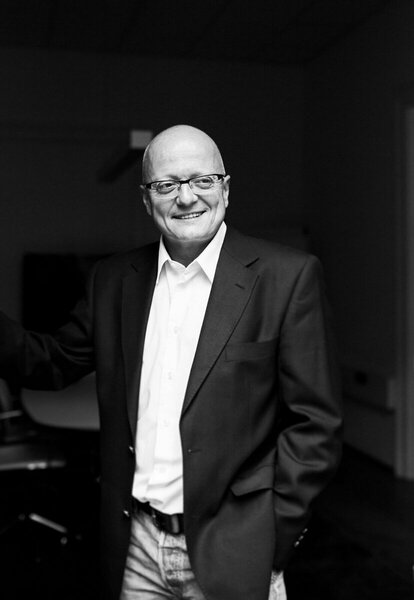

25 Jahre Erfahrung in Projektmanagement, Restrukturierung und Transformation — Ergebnisse liefern anstatt Empfehlungen.
25 Jahre Beratungs- und Projektmanagement-Erfahrung. Verdichtet auf die wesentlichsten Stationen.
Führung auf Zeit in Vakanz- oder Krisensituationen — handlungsfähig ab dem ersten Tag, eingebunden über das Atreus-Netzwerk.
Fit-to-Standard-Projekte und S/4HANA-Umstellungen — von der Konzeption bis zur Governance über den gesamten Projektverlauf.
Organisationsentwicklung in komplexen, multinationalen Konzernstrukturen — mit Erfahrung aus 24-Länder-Programmen.
Aufbau und Leitung von Programm-Offices für großvolumige, mehrjährige Vorhaben.

25 Jahre Beratungs- und Interim-Erfahrung in SAP-getriebenen Transformationsprojekten — von der globalen CRM-Einführung bei Carl Zeiss bis zur landesweiten Reorganisation bei DAW SE.
Mein Ansatz verbindet SAP-Fachwissen mit Programmsteuerung und Kommunikation über Hierarchie- und Ländergrenzen hinweg. Genau dafür steht der Name: management · consulting · communication.